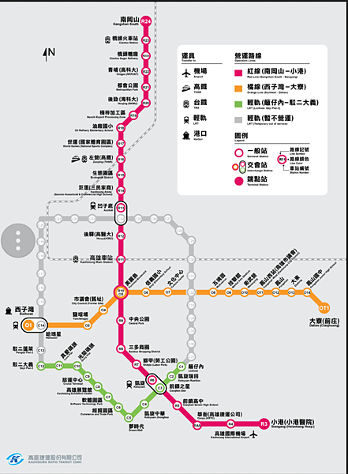
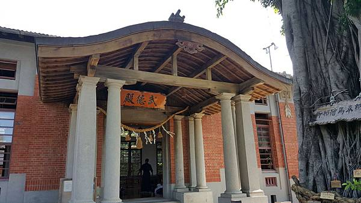
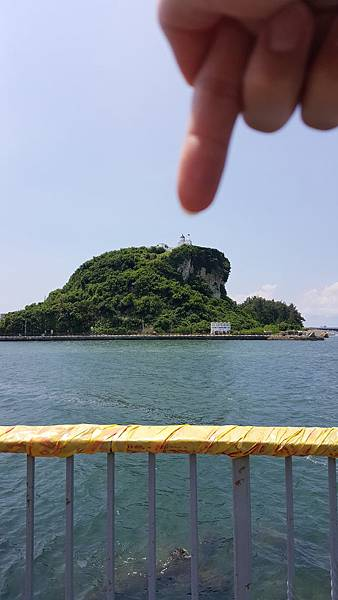
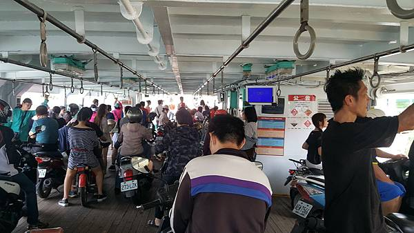
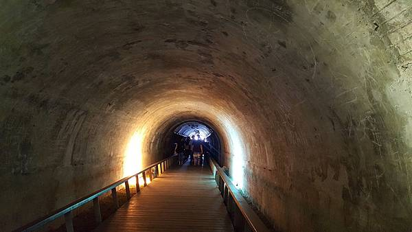

獨自一人旅遊沒有想像中困難
反而能更體會旅行中樂趣
我獨自續留高雄體驗單人旅行
目標~西子灣＆旗津

從美麗島站要轉乘去西子灣站
有個小攤位促銷西子灣租單車打9折優惠，
只要從西子灣2號出口處左轉，就可看見這家出租腳踏車店。
對我來說在陌生地方能方便取車很重要
但是必須壓證件喔！
騎著單車隨處晃晃，被這雄偉建築吸引
武德殿是個劍道、柔道場所，剛好有
學員在上課，不能入內打擾~
騎上西子灣觀景橋，從高處觀看2邊美麗

風景、海景，與大小船隻航行於海面
聞聞海的味道~真令人舒暢
搭渡輪船到旗津，就是在橋下鼓山

輪渡站處搭乘~
國立中山大學~
觀浪步道必來賞海景~只不過艷陽高照
大家通通躲起來避暑，只有Randa騎
單車趴趴造~熱斃了啦
黃昏，觀海步道非常適合觀看夕陽餘暉
也是浪漫約會景點
在中山大學觀浪台
發現令Randa 超感興趣的地方~
有看到手指頭指的地方嗎~?
是燈塔、是燈塔~岸邊還有石牌坊
那區屬於旗津，好驚訝！果然
是最近的遠距離…必須搭船才能

到達~
市定古蹟---雄鎮北門
與觀浪平臺互通，不同方向到達
只不過，這裡是可以從高處觀景
從這處又可看到燈塔~
藍天白雲平靜海面，隱隱約約可
看到作業船隻與大型輪船
走~！ㄧ起搭渡輪船去旗津
港邊處處可見85大樓，必定要來張合照
單車騎上渡輪，使用悠遊卡有優惠喔
好特別的體驗，機車、單車有專屬車道
並分成2線，ㄧ線是在地居專用道，
另一線是遊客專用道
騎車上渡輪好處~不用在大太陽底下
排隊上船，很方便喔！
約在海面上行駛5分鐘，就來到旗津
怎那麼快，和Randa姐用手機聊沒多久
就到啦~
來到燈塔處口，有2個景點可欣賞
左邊往旗後砲台，右邊往燈塔，並有設置
停車格，方便停車
走向燈塔坡道上，能近距離見輪船
少機會能見到巨大輪船好興奮
大太陽底下，來看燈塔真是錯誤選擇
熱到不要不要的~
雄壯85大樓與旗津小鎮
望著寬闊景色難以置信台灣如此美
太少去發掘台灣的美~
高雄燈塔~
全白燈塔與建築物很美吧！！！
值得走上ㄧ趟
旗後砲台
又是另一種風情，更可看到純樸旗津
小鎮與旗津海灣
在海水浴場附近有個秘境
星空隧道

騎乘在隧道裡頭，涼風吹拂更顯悠閒
牆壁也繪畫上了ㄧ些圖騰
出口處出來又是令人驚奇，很美的海面
隧道出口旁有個小徑
也可見到些許仙人掌
走~往小徑探險去
從小徑出來~竟然是在西子灣看到的
石牌坊~終於到達了這
從旗津探望西子灣~
探險成功！！！
路線相關評價
Candy-Lin
不推薦想瘦身減肥者來騎這條路線，因為老街美食太多樣，看到不吃很難受~~完全無法瘦身啊!!
鐵人王
路線平坦、騎起來輕鬆舒服，沿途有很多景點可以參觀拍照，是單車愛好者必騎景點啊!!沒到過旗津別說你來過高雄~~假日必來騎騎的口袋路線
Kevin
很適合假日帶小孩一起來騎的路線，還能搭渡輪欣賞港口風景，星光隧道很有特色，還能跟燈塔拍照，重點是吃東西很方便，老街美食選擇多，唯獨防曬要做好以免曬傷。
JOJO
還不錯!!但個人體力不支無法騎完全程，推薦老街的地瓜酥必買，好吃!!但老街路口轉角的烤魷魚不太新鮮，建議買肉羹店旁邊那間。
Jack
好騎、好玩、好吃，超推薦!!
看更多留言